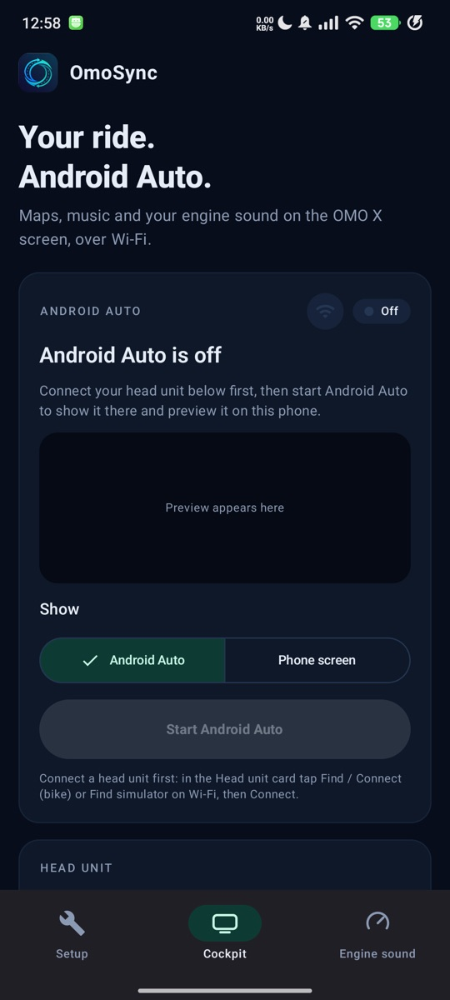
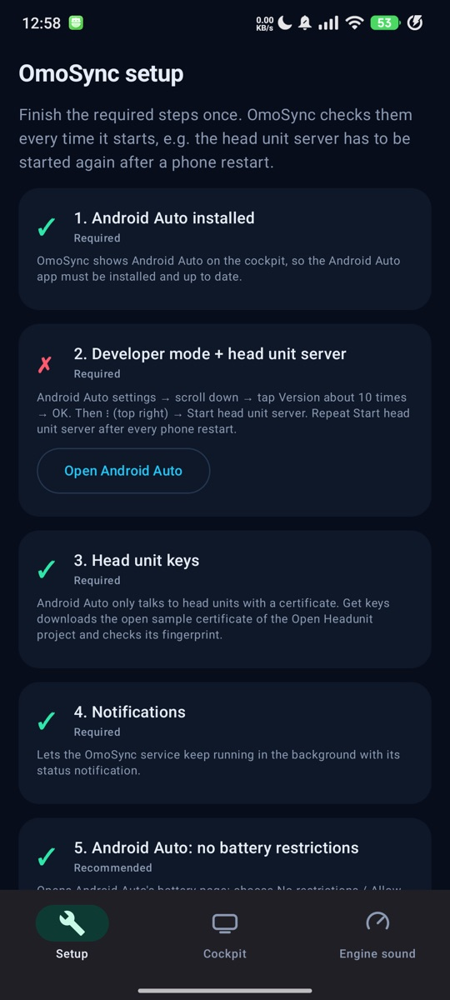
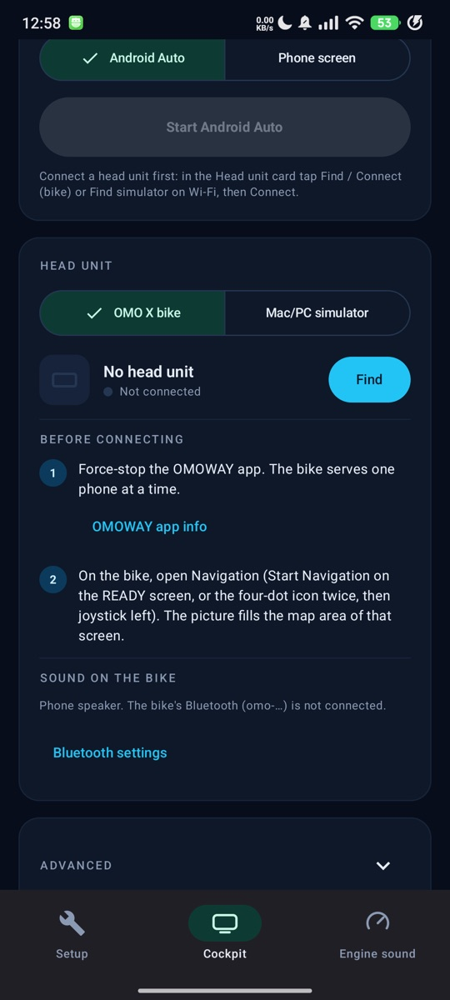

Android Auto di layar cockpit motor OMOWAY OMO X lewat Wi-Fi, ditata pas untuk layar lebar 1920×720, plus suara mesin prosedural.
Android Auto on the OMOWAY OMO X cockpit screen over Wi-Fi, laid out for the wide 1920×720 display, plus a procedural engine sound.



- Kontrol Android Auto dari HP (layar motor tidak bisa disentuh)
- Sebelas preset suara mesin dengan gearbox virtual
- Simulator Mac/PC untuk mencoba tanpa motor
- Control Android Auto from the phone (the bike screen has no touch)
- Eleven engine-sound presets with a virtual gearbox
- A Mac/PC simulator to try it without the bike
Butuh:Needs: Android Auto · motorbike OMOWAY OMO X